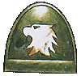
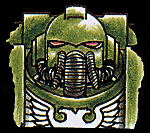

Imperial Forces |
Force Disposition Introduction |
Ork Forces |
|
One of the Raven Guard's successor Chapters, the Raptors are experts at the surgical strike and jungle warfare. In 969.M41 as part of the continuing fight against the Arch Maniac of Calverna in the Segmentum Solar, the Raptors Chapter of Space Marines were en route to the Ork held factory world of Gramnia Major. A freak warp storm threw the Chapter's ships off course and when the battered vessels emerged from warp space, they were forced to crash land onto the death world of Jemadal.
The surface of Jemadal was covered in dense, slimy jungles, teeming with voracious predators and carnivorous plants. The atmosphere of the planet was so heavily saturated with moisture that human lungs, even the hyper efficient multi-lungs of a Space Marine, were unable to extract enough oxygen from the air. Previous attempts to terraform the planet by the Adeptus Mechanicus had been abandoned centuries before and to survive an hour on Jemadal was an achievement. The world was infested with predators and each day the Raptors came under attack from swarms of carnivorous beasts and bat-winged creatures that could kill a man with a single bite.
|
| ||||||||||||||||||||||||||||||||||||||||||||||||||||||||
|
 As the breathable air in the Raptors armour began to run out the Chapter's Tech Marines desperately sought a solution to the problem of their dwindling oxygen supplies. Necessity is the mother of invention and the Tech Marines were able to modify the breathing apparatus of the powered armour helmets to incorporate an osmotic gill that would filter the oxygen from the moisture rich air. This proved to be highly efficient and the Space Marines were able to survive for seven years on Jemadal, subsisting on a diet of indigenous plants and fungi before being rescued from the death world by the Ultramarine battle barge Rath's Honour.  The constant warfare in the depths of Jemadal's jungles had honed the already fearsome skills of the Raptors to an exceptional degree and with the outbreak of war on Armageddon, they were amongst the first Chapters to be called upon. The Chapter has deployed throughout the equatorial jungle and vapour woods with the Ork Hunters and Catachans where their deadly jungle warfare skills will be put to best use. | |||||||||||||||||||||||||||||||||||||||||||||||||||||||||